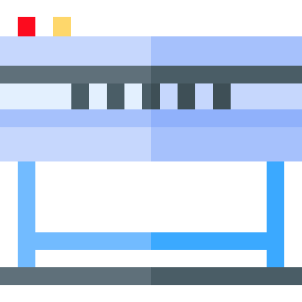
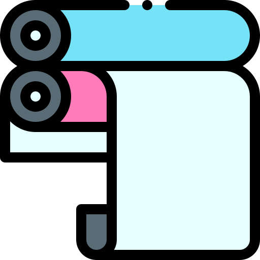
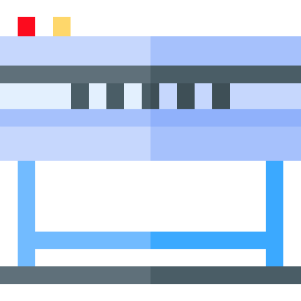
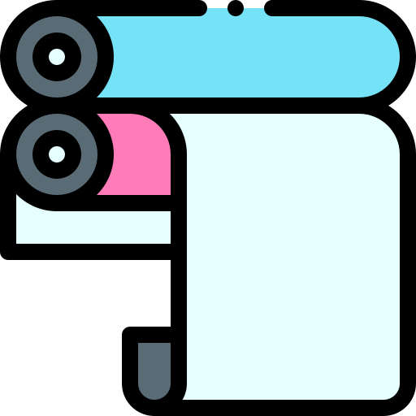

Name
The 4 “C”s of Color Management
GRC 460 • Rich Adams
Icons courtesy of flaticon.com
- Color-Managed Workflow
- 4 “C”s of Color Management
- Print Page
The 4 Cs
The 4 Cs model refers to a process for setting up and adjusting color reproduction equipment for the most accurate and consistent color, ensuring that each device performs at its best. The 4 Cs are depicted in a hierarchy where lower steps must be done first.
Instructions
1. Write the steps necessary to optimize, calibrate, profile and convert color for each device.
2. Print your completed page to PDF using the green “Print Page” button (or by saving a screen capture). Entries will reset when the page is reloaded.

 


